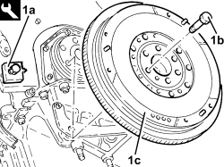
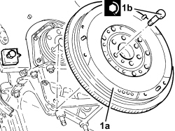

1024B10 ENGINE FLYWHEEL - R + R FOR VERSIONS WITH MANUAL GEARBOX
- Path
- Procedures > 10 ENGINE > 1024 CRANKSHAFT AND FLYWHEEL > 1024B FLYWHEEL > 1024B10 ENGINE FLYWHEEL - R + R FOR VERSIONS WITH MANUAL GEARBOX
- Kind
- repair procedure (removal / refitting; the operation number is the code)
- Applies to
- all engines; all production periods
- Interactive page
- https://sloeber94.github.io/elrnDB-aBrrSpdr/en/#/946001845
Applies to: engines: 3.2 JTS; all production periods
Applies to: engines: 2.2 JTS; all production periods
 Removing
Removing
 Refitting
RefittingOp. 4450B12 FRONT WHEELS (TWO) - R+R
Op. 1076B72 INTERMEDIATE EXHAUST PIPE WITH HOSE SECTION - R+R
Op. 4410D10 FRONT SUSPENSION FRAME - R+R
Op. 5530B52 BATTERY SUPPORT/DRIP TRAY - R.R
Op. 1072C43 EXHAUST MANIFOLD UPPER BULKHEAD R R
Op. 1072C42 EXHAUST MANIFOLD LOWER BULKHEAD R R
Op. 2110A10 MANUAL GEARBOX AND DIFFERENTIAL - R + R
Op. 1810A24 CLUTCH - R + R WITH GEARBOX REMOVED
Op. 1024B22 ENGINE FLYWHEEL - R.R WITH CLUTCH REMOVED FOR VERSIONS WITH MANUAL GEARBOX
Applies to: engines: 2.2 JTS; all production periods
Refitting
RemovingOp. 1024B22 ENGINE FLYWHEEL - R.R WITH CLUTCH REMOVED FOR VERSIONS WITH MANUAL GEARBOX
Op. 1810A24 CLUTCH - R + R WITH GEARBOX REMOVED
Op. 2110A10 MANUAL GEARBOX AND DIFFERENTIAL - R + R
Op. 1072C42 EXHAUST MANIFOLD LOWER BULKHEAD R R
Op. 1072C43 EXHAUST MANIFOLD UPPER BULKHEAD R R
Op. 5530B52 BATTERY SUPPORT/DRIP TRAY - R.R
Op. 4410D10 FRONT SUSPENSION FRAME - R+R
Op. 1076B72 INTERMEDIATE EXHAUST PIPE WITH HOSE SECTION - R+R
Op. 4450B12 FRONT WHEELS (TWO) - R+R
Op. 0010T41 MANUAL GEARBOX OIL CHECK LEVEL AND TOP UP IF NECESSARY
Applies to: engines: 2.4 JTD 20v; all production periods
Removing
Refitting1. With the flywheel lock (1a) fitted, undo the bolts (1b) and remove the flywheel (1c).
Tool | Description | Function | Validity |
|---|---|---|---|
1860846000 | Counter-torque | Flywheel lock |

Applies to: engines: 2.4 JTD 20v; all production periods
Refitting
Removing1. Place the flywheel (1a) in its housing and secure it tightening the new bolts (1b) to the recommended torque.
Component | Fastening | dia | Value (daNm) | Validity |
|---|---|---|---|---|
Engine flywheel | Bolt (pretreated to be replaced) | M12 | (crankshaft side) 14.4 - 17.6 | 1.9 JTD 8V 1.9 JTD 16V 2.4 JTD 20V |

Applies to: engines: 2.4 JTD 20v; all production periods
Topics linked from this page (14)
- 0010T41 MANUAL GEARBOX OIL CHECK LEVEL AND TOP UP IF NECESSARY
- 1004B10 POWER UNIT WITH MANUAL GEARBOX - R.R
- 1004D10 POWER UNIT (MANUAL GEARBOX), REMOVED, DISMANTLE AND REASSEMBLE
- 1024B22 ENGINE FLYWHEEL - R.R WITH CLUTCH REMOVED FOR VERSIONS WITH MANUAL GEARBOX
- 1072C42 EXHAUST MANIFOLD LOWER BULKHEAD R R
- 1072C43 EXHAUST MANIFOLD UPPER BULKHEAD R R
- 1076B72 INTERMEDIATE EXHAUST PIPE WITH HOSE SECTION - R+R
- 1810A20 CLUTCH - R + R
- 1810A24 CLUTCH - R + R WITH GEARBOX REMOVED
- 2110A10 MANUAL GEARBOX AND DIFFERENTIAL - R + R
- 4410D10 FRONT SUSPENSION FRAME - R+R
- 4450B12 FRONT WHEELS (TWO) - R+R
- 5530B10 BATTERY - R+R
- 5530B52 BATTERY SUPPORT/DRIP TRAY - R.R